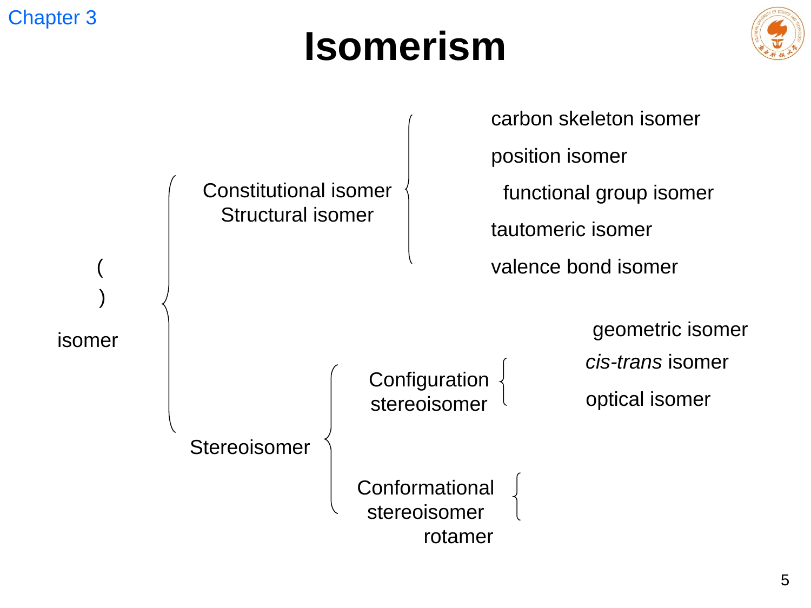
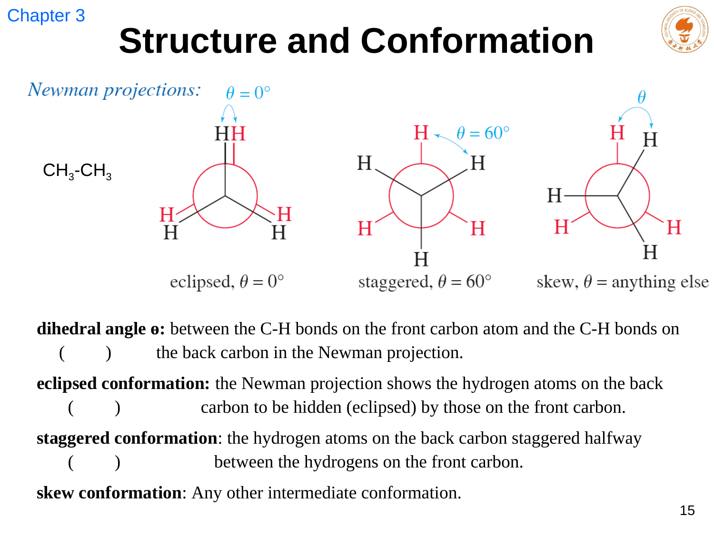
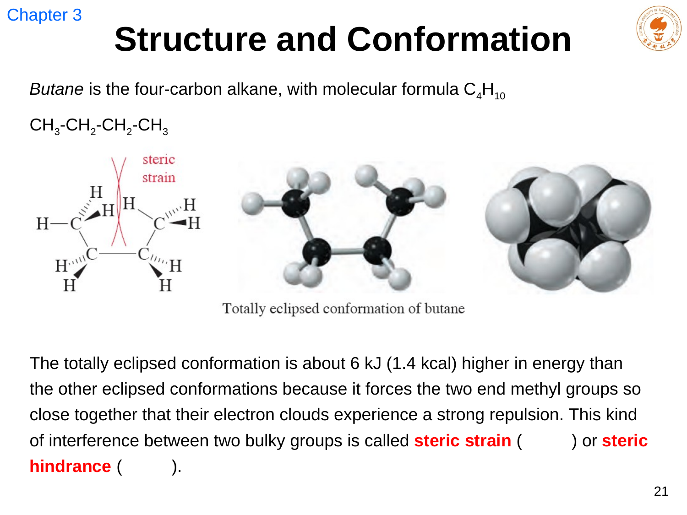
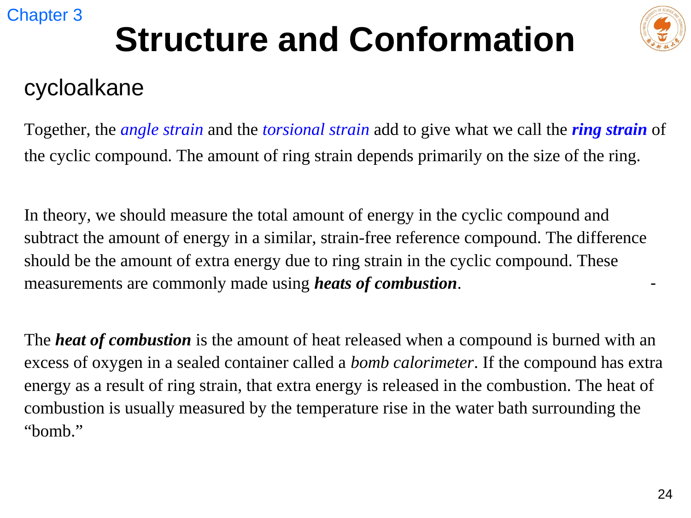
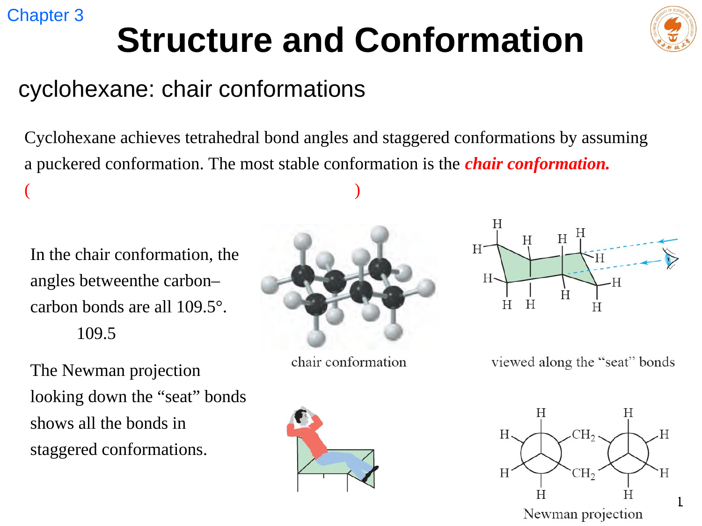
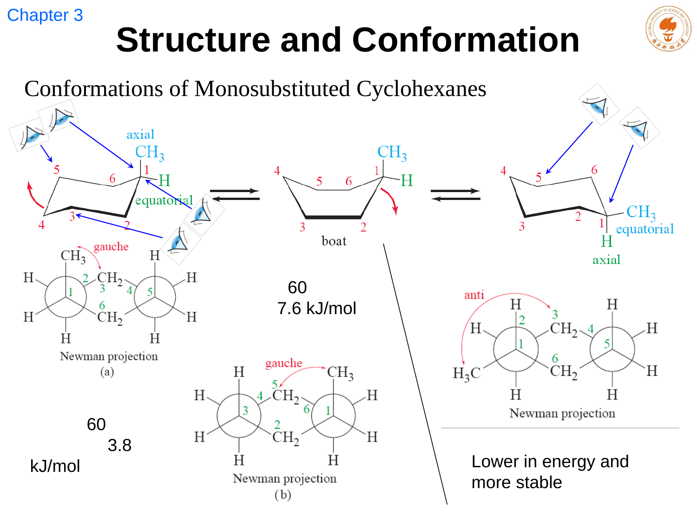
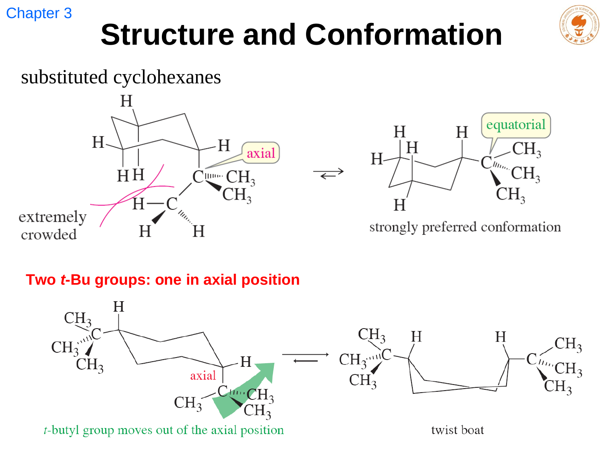
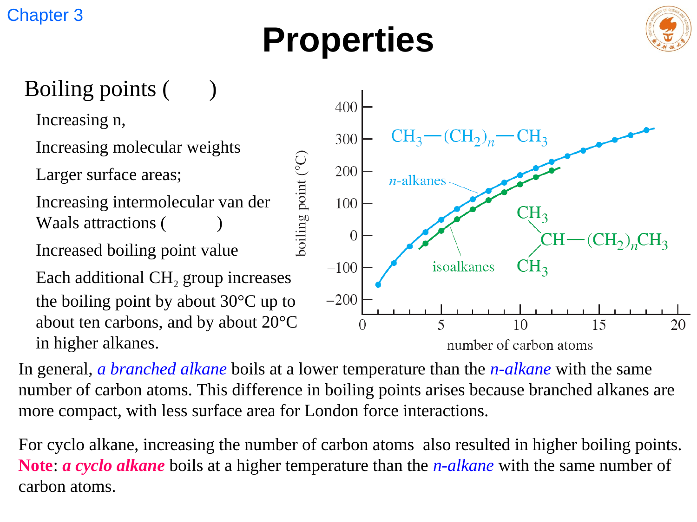
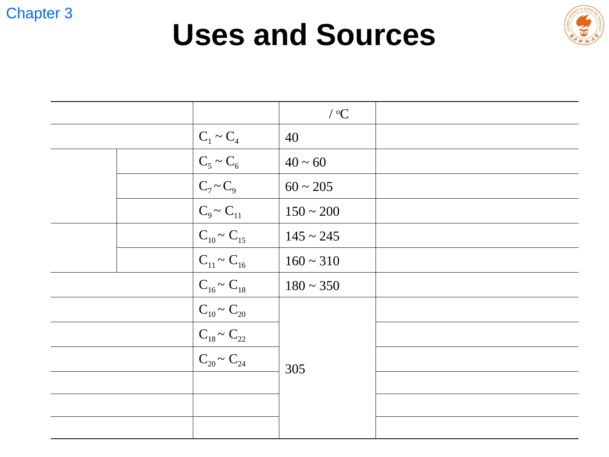

包括碳骨架、位置、官能团、互变与价键异构。它们需要断键、重排或改变键连关系才能相互转化。
LECTURE 04 · CHAPTER 3
异构、构象、环张力与烷烃反应
Isomerism, conformational analysis, cycloalkanes, properties and reactivity
课堂速记修订
课件原图
术语互链
课程问答
1. 异构体：分子式相同，物质可以不同
异构体（isomer）具有相同分子式，却是不同化合物。首先区分构造异构体与立体异构体：前者原子连接顺序不同，例如正戊烷、异戊烷和新戊烷；后者连接顺序相同，但三维排布不同。

例如环烷烃的 cis/trans。两者不能通过普通单键旋转直接互变，通常必须断键再成键。
由单键旋转产生，通常在室温下快速互变，绝大多数不能分离为纯样品。
环上 cis 表示两个指定取代基朝向同一面，trans 表示相反面；它描述相对构型，与“直立或平伏”是另一层概念。
2. 乙烷与 Newman 投影：把旋转看清楚
构象（conformation）是绕 σ 键旋转得到的原子空间排列；Newman 投影沿一根 C–C 键直视，前碳画成三条相交的键线，后碳画为圆。它能直接读出前、后键之间的二面角 θ。

交叉式（staggered）使相邻键的电子云尽量错开，能量较低；重叠式（eclipsed）使键电子云发生较强排斥，能量较高。这种随旋转而变化的能量阻力称扭转张力。
3. 丁烷的能量顺序：扭转张力加上空间张力

丁烷围绕 C₂–C₃ 键旋转有四类标志性构象：对位交叉式 anti 最稳定；邻位交叉式 gauche 次之；部分重叠式更高；甲基彼此完全重叠的全重叠式最高。gauche 与 anti 的差别来自两个甲基在 60° 二面角时出现的额外排斥；全重叠式除扭转张力外还叠加了明显的空间张力。
相对稳定性： anti < gauche < eclipsed < fully eclipsed
此处“<”指相对能量从低到高。anti 和 gauche 都是交叉式，只是前者把两个甲基隔开 180°，后者只隔开 60°。高碳烷烃的 C–C 键也通常偏好 anti 或 gauche 局部构象。
4. 环张力如何得到：燃烧热不是“凭感觉”
环张力（ring strain）主要包含角张力和扭转张力，有时还需讨论跨环排斥。环若迫使 C–C–C 键角偏离接近四面体的 109.5°，sp³ 轨道不能以最佳方向重叠，形成角张力；若相邻键重叠，形成扭转张力。

E
strain ≈ E
observed − E
reference
E strain 是环张力带来的额外内能，E observed 是实际环状化合物对应的能量，E reference 是按同类无张力参考结构估算的能量。实验上常将“每个 CH₂ 的燃烧热”与长链烷烃的平稳趋势比较：张力越大，化合物越高能，燃烧时额外放热越多。
60° 键角造成强角张力，平面结构又使所有 C–H 键近似重叠；C–C 键常用“弯曲键”描述，键较弱。
环丁烷稍折起，在增大少量角张力的代价下减小扭转张力；环戊烷采信封构象并快速起伏，避免完全重叠。
椅式同时接近 109.5° 键角、所有相邻键交叉，因此近乎没有角张力和扭转张力。
张力释放能为反应提供驱动力，但不单独决定反应快慢；还需考虑断键能垒、机理和试剂条件。
5. 环己烷：椅式、船式与翻环

椅式构象最稳定。每个碳上有一根直立键（axial）和一根平伏键（equatorial）；六根直立键上下交替，六根平伏键大致沿环外缘伸展。翻环（ring flip）使每个取代基 axial ⇌ equatorial，但不改变它在“上”或“下”这一立体化学朝向，因此不会把 cis 变成 trans。
船式同样接近理想键角，却有重叠键和两端旗杆氢之间的排斥。扭船式可部分缓解这些排斥，但仍显著高于椅式能量，所以常是翻环路径中的高能构象而非主要存在形式。
6. 取代环己烷与十氢化萘

体积较大的取代基优先占据平伏键，以减少与同侧 3、5 位直立氢或取代基的 1,3-二轴相互作用。双取代环己烷先固定 cis/trans 相对关系，再逐个画两把椅子：只有在给定相对构型允许时，才能让两个取代基同时平伏。对 1,3-二甲基环己烷，cis 构型能形成双平伏椅式；trans 构型永远是一平伏、一直立。

7. 环己烷进阶：从“画对椅式”到判断主要构象
环己烷并非只停留在一把椅子上。翻环时，一把椅式先经过半椅式，再到扭船式、船式和另一侧的扭船式，最后回到反转后的椅式。椅式定义为 0 kJ·mol⁻¹；扭船式约高 23 kJ·mol⁻¹，船式因旗杆氢排斥与重叠键更高，而半椅式接近翻环最高点，约高 45 kJ·mol⁻¹。因此室温下翻环很快，未取代环己烷的两把椅式等能且数量相等，但分子在任意时刻仍主要待在椅式而非船式。
画取代环己烷时，先画对椅式骨架，再对每个碳标明“上/下”方向，最后才决定该取代基在这把椅子里是直立还是平伏。直立键在六个碳上上下交替；同一碳上的平伏键必定和该碳的直立键方向相反。翻环后，每个取代基的上/下方向保留，位置则直立与平伏互换。这个顺序能避免最常见的错误：把 cis/trans 直接等同成某一种直立/平伏组合。
单取代体系的核心是 A value，即取代基由平伏改放直立所付出的自由能代价。甲基的 A value 约为 7.6 kJ·mol⁻¹，来源主要是它与同侧 3、5 位直立氢的两组 1,3-二轴相互作用。用 K = exp(−ΔG/RT) 估算，298 K 时甲基平伏椅式约占 95%，并非“直立构象完全不存在”。体积更大的叔丁基代价更高，常近乎锁定在平伏位置；因此它能作为判断复杂体系主要构象的强指示基团。
双取代环己烷要把“相对构型”和“构象偏好”分两步处理。先由题目确定 cis 或 trans，再画一把椅式并按上/下方向放置两个取代基，翻环即可得到另一把椅式。只有当相对构型允许时才会出现双平伏构象：例如 cis-1,3-二甲基环己烷可有双平伏椅式，trans-1,3-二甲基环己烷则始终一平伏一直立；反过来，trans-1,2-二甲基环己烷可双平伏，而 cis-1,2-二甲基环己烷不可以。比较两把椅式时，优先让体积最大的取代基位于平伏键，再比较剩余的 1,3-二轴与 gauche 相互作用。
这套分析在十氢化萘、糖环、类固醇和天然产物中会不断重现。构象不是附带的“画图题”：它改变取代基的可接近面、反应所需的轨道几何和过渡态空间排斥，所以能进一步影响反应速率与选择性。
8. 物理性质与反应概览

烷烃非极性、疏水，基本不溶于水。直链烷烃的沸点随碳数增加而升高，支链更紧凑，通常沸点更低；熔点还强烈受晶格堆积和对称性影响，偶碳直链烷烃常高于相邻奇碳成员，不能只用分子量判断。
烷烃总体反应性低。工业上可发生燃烧、氧化、裂化、氢化裂化与异构化。卤化反应需要光或热引发，后续将以自由基链反应机制详细分析。

QUESTIONS RECORDED BEFORE NOTE SUBMISSION
9. 课程问答
Q1链张力（环张力）怎么计算？
A
核心是比较：将环状化合物的实际燃烧热按 CH₂ 单元归一化，与相近的无环、近似无张力参考趋势比较。若环本身储存额外能量，燃烧时会释放更多热。该差值近似给出环张力；它不是直接把“109.5° 减实际键角”代入一个通用公式。
Q2为什么甲基放在平伏键更稳定？
A
直立甲基会与同侧 3、5 位的直立氢产生两组近距离的 1,3-二轴相互作用，几何上类似丁烷的 gauche 排斥。平伏甲基避开这些相互作用，因此能量更低；取代基越大，这一偏好越强。
Q3翻环会不会把顺反构型翻掉？
A
不会。翻环只改变 axial/equatorial 位置，同时保留取代基的上/下朝向；cis/trans 由相对上、下关系定义，所以翻环不改变构型。改变 cis/trans 需要破坏并重建键。